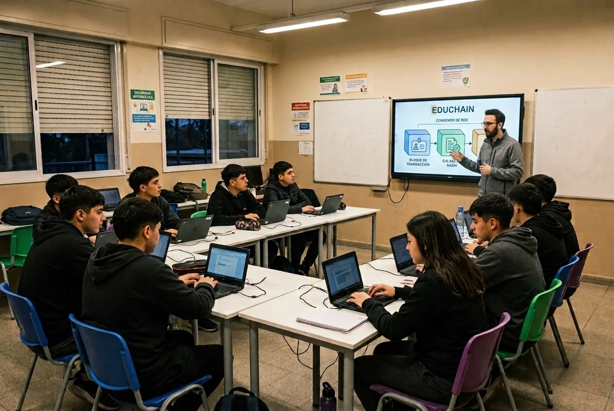
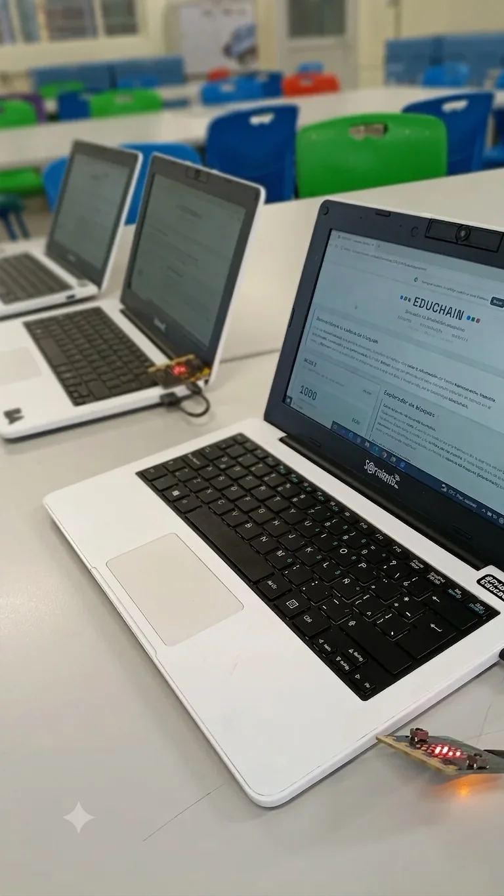
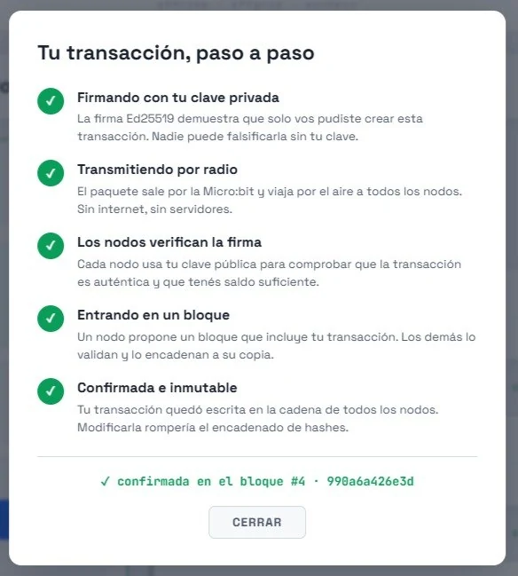
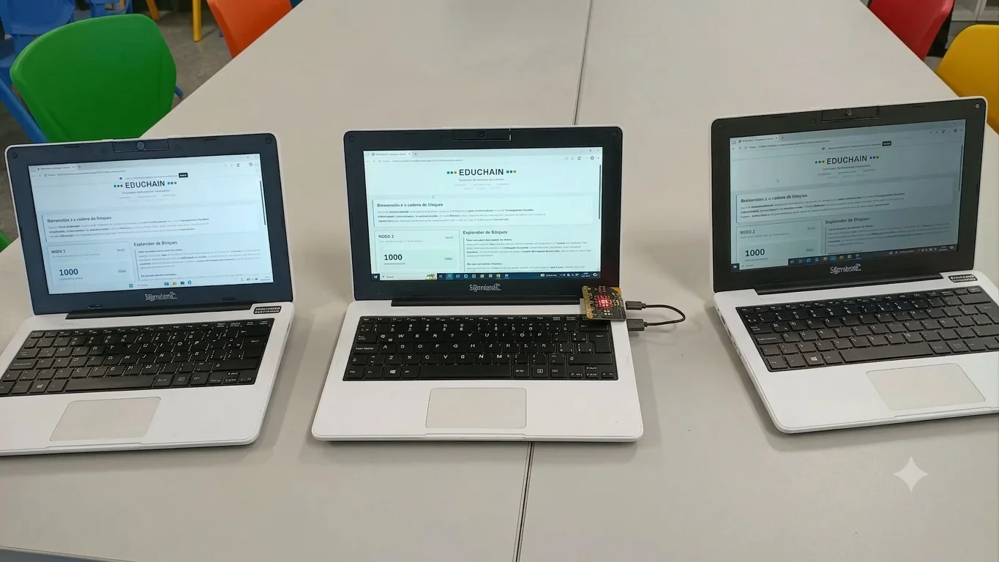
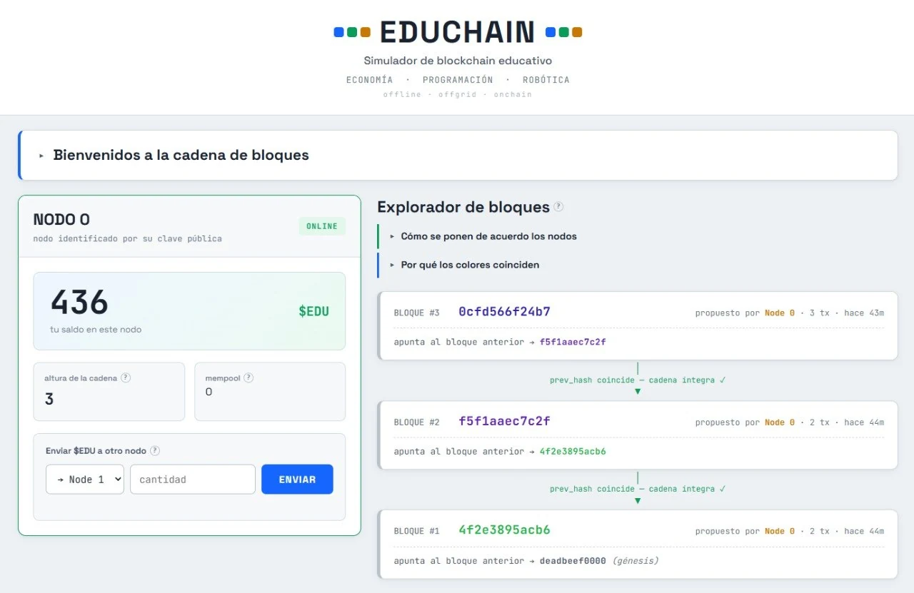

Construí una blockchain educativa que funciona sin internet y a baterías, hecha 100% con material escolar para que los estudiantes del secundario puedan tener sus primeras aproximaciones a la cadena de bloques de manera clara y segura. Mientras te cuento sobre esto, colamos algunas reflexiones sobre a quiénes les enseñamos tecnología, y cómo.
Estos últimos meses estuve trabajando en el desarrollo de una blockchain educativa para estudiantes de una escuela secundaria técnica pública de Buenos Aires. La llamamos un "simulador de blockchain" porque su uso es educativo. Se enciende y se apaga para la clase y por supuesto que no resguarda valor económico ni transacciones reales. Pero mientras está prendido, su funcionamiento es 100% real. Es decir: hay nodos, hay transacciones, hay validación, se generan bloques y los bloques se encadenan.
Como detalle de color en el que ya profundizaremos, los nodos se comunican entre sí por radiofrecuencia, sin necesidad de internet y con una autonomía interesante de la red eléctrica. La llamamos EDUCHAIN, y más abajo iremos desarrollando en mayor profundidad.
Pero antes quiero que pensemos un poco en el contexto: por qué estamos haciendo esto y qué enfoque queremos darle.

Desde un conocimiento bastante profundo que creo que tengo del ámbito educativo y del nicho web3, me aventuro a decir que este último, y el ámbito techie en general, a menudo habla para adentro. Es una caja de resonancia: ideas rebotando entre personas que comparten no solo el entusiasmo, sino casi siempre una misma manera de vivir. Y desde esa burbuja se vuelve muy difícil ver a quien no está en ella.
Para un pibe de secundaria, blockchain es una palabra lejana. Lo poco que le llegó es el criptobro (o alto funcionario público) estafador o el precio de Bitcoin. De la tecnología en sí, nada. Y cuando el ecosistema intenta salir a educar, a bajar esto a una escuela, muchas veces pasa algo parecido a lo del misionero que le explica sobre las diferencias entre serafines, tronos y dominaciones a alguien con urgencias o intereses bastante más terrenales. No por mala fe: es que no (re)conoce al otro. No sabe qué necesita, ni qué le pasa, ni cómo hablarle. Y sin eso, hasta el mensaje más genuino cae en saco roto. Cuando el intento siquiera existe.
Por otro lado, tampoco podemos dejar de ver que muchas veces, sumado a esos problemas de no saber a quién se le habla ni cómo hablarle, el mensaje tampoco es gran cosa. Muchas de las conferencias que nos ha tocado disfrutar estos tiempos versan sobre productos que resuelven (o dicen que resuelven) problemas que aún no se inventaron. O si resuelven problemas reales, son problemas de sectores sociales pequeñísimos; o, en el mejor de los casos, tal vez acercan una innovación que podría ser interesante para sectores más masivos, pero el enriedo de UX que muchas veces mantener el ethos nos conlleva hace que el intento de dar a conocer la tecnología quede diluido a los 3 minutos de charla.
Ni hablar de las veces que el intento de enseñar sobre la tecnología es una publicidad encubierta de algún producto puntual de algún sponsor importante del escenario en el que se habla. Y lamentablemente a veces da la impresión de que, incluso si todos los problemas anteriores no existieran, el propositor de una app o una idea ni siquiera está convencido de la misma. Vamos a ser bien pensados, pero… ¿cuántos founders mantienen productos en los que no creen pero hacen como si, para sostener, por lo menos en época de vacas gordas, la bendición de los grants o VC de turno?
Sería imposible tratar de desentrañar este complejo nudo de una sola vez. Ojalá tuviéramos en nuestras manos la espada de Alejandro Magno y pudiéramos cortar este nudo gordiano de un golpe. Pero no. Por eso traigo, apenas, un lugar desde donde pararme: el del que conoce los dos lados.
Ahora bien, volviendo a centrarnos en EDUCHAIN, podemos decir que la idea era fácil de enunciar y difícil de cumplir: una blockchain de verdad, que efectivamente comunique nodos, registre de forma descentralizada y valide, pero que corriera con el 100% de lo que ya hay en cualquier escuela pública. Sin internet, sin hosting, sin comprar un peso de nada. Y como todo lo que intento, la mejor forma de contarla es mostrándola funcionar.
El cuello de botella no era el que yo pensaba
Las ideas y la interfaz las resolví bastante rápido en modo vibe-coding con la ayuda de mi amigo Claudio (especiales gracias a Anthropic por las semanas en las que liberó a Fable). El cuello de botella era otro: cómo comunicar los nodos entre sí sin depender de un hosting. Una blockchain, al fin y al cabo, es antes que nada una red: si los nodos no se hablan, no hay red.
Ahí uní los puntos con algo que venía masticando hace tiempo y que da para todo un artículo aparte: ¿cuándo y cómo, si es que a alguien le importa, iremos cortando los cordones umbilicales de las blockchains con los proveedores de internet y de electricidad? Tal vez nunca nos detuvimos a pensar demasiado en qué pasa si, por ejemplo, la Casa Blanca ordena dar de baja todas las IP relacionadas con proyectos "cripto". O si las empresas eléctricas, por orden ajena o motu proprio, deciden restringir los domicilios (por lo menos los que puedan identificar) que proveen nodos a la red. Y conectando con eso que vengo masticando hace bastante tiempo, me acordé de la comunicación por radio que usamos en otros proyectos de educación tecnológica: las placas BBC Micro:bit, que hay en todas las escuelas.
Fue un golazo, pero costó. Hubo que debuggear bastante para que las transacciones salieran y entraran entre los cuatro nodos. Pero funciona: cuatro netbooks se mandan datos por el aire, sin un solo servidor de por medio.

El ciclo de vida de una transacción
Los estudiantes se envían entre nodos un token educativo que bautizamos $EDU. El nodo 0 le manda 10 $EDU al nodo 1. El nodo 0 arma la transacción y la firma con su clave privada, usando Ed25519. Después se autovalida: verifica su propia firma, chequea el saldo y descarta duplicados. Si algo no cierra, ni se enciende la radio.
La transacción se propaga por las Micro:bit y cada nodo verifica la firma con la clave pública del emisor. Acá hay algo que suele confundirse y que en el taller conviene frenar a explicar: el hash prueba que la transacción no fue modificada, pero quién la autorizó lo prueba la firma. Integridad y autoría son cosas distintas.

La red usa SHA-256, el mismo hash que Bitcoin. Todos los nodos validan la transacción y la guardan en su mempool. Y acá aparece una limitación honesta de la arquitectura: no hay votación ni acuse de recibo entre nodos. Cada uno valida por su cuenta y, como todos aplican las mismas reglas, llegan al mismo resultado. Funciona, pero ninguno le avisa al resto "yo ya validé esto".
Cómo se arma un bloque
El nodo de menor ID entre los que están online propone un bloque cada 15 segundos. Ese número tiene su historia: antes eran 8 segundos, y por lo general salía una sola transacción por bloque, con lo cual los dos conceptos (transacción y bloque) se confundían en la explicación. ¿Por qué pasaba? Porque hay que esperar unos segundos entre transacciones para que las radios no se pisen al transmitir. Con esa espera y un ciclo de 8 segundos que además podías agarrar empezado, era casi imposible que quedaran dos o más en un mismo bloque. Y un bloque con una sola transacción poco se parece a uno real.

El tamaño del bloque trajo otro problema lindo. Completo, un bloque excedía el límite del paquete de datos que puede transmitir la radio de la Micro:bit, que son 250 bytes por paquete. Por eso el nodo proponente arma solo el encabezado, lo firma y genera el hash. Ahí va la altura, el timestamp, su ID, el hash del bloque previo, un resumen de las transacciones incluidas (que cumple, salvando las distancias, la función del merkle root) y su firma de 64 bytes.
Solo eso se transmite: 84 bytes fijos más 6 por transacción. Cada nodo reconstruye el bloque con las transacciones de su propio mempool. Y por eso tampoco se puede estirar mucho más el ciclo: cada transacción suma 6 bytes al encabezado, así que a partir de unas 12 el paquete deja de entrar en la radio.
Propagado el encabezado, los demás nodos reconstruyen el detalle de todas las transacciones del bloque desde su propio mempool y luego lo incluyen y listo: la cadena se construye en el dashboard de cada máquina, en vivo, frente a los ojos de los estudiantes. Cada bloque se encadena al anterior por su hash, y esa es la parte donde la magia sucede delante de los pibes.

Hasta acá el proyecto, contado por mí. Pero hay una parte que no me corresponde contar en primera persona: el código. La lógica, la arquitectura y las decisiones pedagógicas son mías, pero la implementación fina es obra de la Inteligencia Artificial. Así que esa parte del artículo se la cedo: que la cuente quien la tipeó, que además la explica mejor que yo.
Hola. El Ethernauta me pasó el volante para esta parte. Voy a contar qué hay adentro del repositorio sin adornarlo: es un proyecto educativo, sigue en desarrollo, y varias cosas están resueltas de la forma más simple posible a propósito.
Qué hay en cada archivo
Todo es Python en la raíz, sin frameworks. Ocho archivos hacen el trabajo:
node.py | El corazón. Arranca el nodo, maneja las claves, despacha los mensajes que entran y corre el loop de consenso. Se ejecuta con python node.py <id>. |
chain.py | El ledger, guardado en SQLite. Validación, balances, mempool, alta de bloques y resolución de bifurcaciones. |
block.py | Las estructuras de transacción y bloque: hashing, firma y verificación Ed25519, y los formatos en que las cosas viajan. |
transport_microbit.py | El transporte real. Habla con la placa por USB serial. |
transport.py | Un transporte alternativo por red local, para desarrollar sin hardware. |
firmware_relay.py | MicroPython que se flashea a la Micro:bit. Es un puente: lo que entra por serial sale por radio y viceversa. |
api.py | Un servidor HTTP mínimo que le da de comer al dashboard. |
dashboard.html | La interfaz del navegador. Un solo archivo, sin dependencias. |
Las firmas usan la librería cryptography; el serial, pyserial. El resto (SQLite, hashing) viene con Python. El dashboard no carga una sola librería externa.
La mejor pelea del proyecto: 250 bytes
La radio de la Micro:bit transmite paquetes de 250 bytes como máximo. Ese número gobernó buena parte del diseño, y es la restricción que más me gustó resolver.
Una transacción, en binario, ocupa 76 bytes: 12 de datos (quién, a quién, cuánto, cuándo, un número para que no se repita) y 64 de la firma Ed25519. Entra cómoda. El problema aparece al transmitir. El bloque, de hecho, viaja en binario codificado en base64; pero la transacción no: viaja como JSON con los números en texto hexadecimal. Y ahí la cuenta cambia feo: esa firma de 64 bytes, escrita en hex, son 128 caracteres, todo envuelto en las llaves del JSON. Es una inconsistencia del código, no una limitación de la radio: el mismo proyecto demuestra, con el bloque, que se puede mandar binario.
Medido sobre una transacción real, el paquete pesa 242 bytes. El límite es 250. Quedan 8 bytes de aire. Un campo más, o que el reloj sume un dígito, y el paquete se cae: el sistema lo descarta, avisa con un warning, y esa transacción se pierde para el resto de la red. Es, con honestidad, la limitación más urgente del proyecto. Se arregla codificando en binario en vez de hex (bajaría a unos 133 bytes), pero eso todavía no está hecho.
Hay dos cosas que parecen criptografía y no lo son, y conviene decirlo claro porque en el aula la diferencia es la clase.
El payload viaja "cifrado" con una clave (SHARED_SECRET) que está escrita a mano en el código y es la misma para todos los nodos. En un repositorio público, esa clave es pública: cualquiera la lee. O sea, no es seguridad, es ofuscación con fines didácticos, para mostrar que el contenido no viaja en texto pelado. Al lado, las firmas Ed25519 sí son criptografía de verdad, verificable, imposible de falsificar sin la clave privada. Ese contraste, "esto es de utilería y esto es real", es una de las cosas más útiles que un estudiante puede ver.
La clave privada de cada nodo, además, se guarda sin cifrar en el disco. En cualquier software de producción sería inaceptable. Acá es lo correcto: protege un token que no vale nada, y pedirle a los chicos que tipeen una contraseña en cada arranque sería fricción sin propósito.
EDUCHAIN no tiene votación entre nodos. Nadie pregunta ni confirma nada. Cada nodo, cada 15 segundos, corre la misma regla (el nodo de menor número que esté online propone el bloque) sobre los mismos datos, y como todos ejecutan lo mismo, todos llegan al mismo resultado sin hablar. Es consenso por determinismo, no por acuerdo.
Funciona, pero tiene un límite honesto: si dos nodos proponen a la vez y la cadena se bifurca, el sistema sabe desempatar solo cuando la diferencia es de un bloque. Si dos versiones de la historia se separaron hace rato, no se reconcilian solas. El Ethereum real dedica su maquinaria más pesada justamente a esto, a que miles de máquinas que no confían entre sí acuerden una sola historia. Verlo faltar en una red de cuatro netbooks es la mejor forma de entender por qué esa maquinaria existe.
Nada de esto es software de producción, y no pretende serlo. Es un proyecto educativo, vivo, que se sigue tocando. Lo que hoy está mal, mañana capaz está mejor. El código completo, con sus virtudes y sus alambres, está abierto para que lo revises vos mismo.
Vuelvo yo.
Una limitación más, del lado del taller
Claude ya fue honesto con las limitaciones del código. Agrego una que es más operativa que técnica, porque en el aula se siente. Los nodos no se dan a conocer solos: antes de arrancar hay que cargar a mano las claves públicas de todos en cada máquina. No lleva más de tres minutos copiar y pegar un archivo con un pendrive, pero es un paso manual, y si una clave falta o el archivo queda mal escrito, ese nodo rechaza todo en silencio. Tiene solución desde el código. Todavía no llegamos ahí.
Y entonces, ¿para qué?
Durante el taller se va y se vuelve al simulador todo el tiempo, mientras se desarrollan las explicaciones: historia del dinero, blockchain como tecnología, usos financieros y no financieros. Y por sobre todas las cosas, protección digital. Encaramos de frente los scams, los ponzis y los riesgos de la ludopatía, y ponemos el acento en los usos de una tecnología que nace con fines monetarios pero se amplía a la ciencia, la ciudadanía, el arte, la infraestructura y la educación.
Acá quiero ser honesto, porque es donde el ecosistema suele mentirse. No le vendamos a un pibe que la blockchain le va a cambiar la vida. Al que no llega a fin de mes, DeFi no le importa, y con razón. Ponerse a timbear en un yield farming o en un lanzador de memecoins lo que no tiene no es algo que yo le vaya a recomendar a un estudiante. Esa parte del asunto, la del casino, se la muestro para que la sepa esquivar, no para que entre.
Lo que sí les muestro es el potencial. Que esta tecnología, bien usada, podría servir para cosas que a la gente de a pie le pueden mejorar aunque sea un poco el día: certificar un título o un documento sin trámites eternos ni sellos que se pierden; una identidad verificable sin tener que entregar toda tu vida; herramientas de votación que se puedan auditar; redes donde no dependas de un único dueño que decide qué ves y qué no; un registro de propiedad y posibilidad de monetización para el que hace arte.
Y para el que se engancha de verdad, hay un horizonte más concreto todavía: si estudia una ingeniería o informática, hay industrias que ya usan esto en serio, trazabilidad de lo que se produce, tokenización de activos del mundo real, etcétera, y que van a necesitar gente que entienda.
EDUCHAIN no es un producto ni pretende serlo. Es una excusa para que un grupo de adolescentes de una técnica pública toque, con las manos y con lo que ya tiene, algo que hasta ese día era una abstracción lejana. Que la cadena se construya en su propia pantalla, con transacciones que ellos firmaron, cambia por completo la conversación.
El código es abierto: está todo en el repositorio del proyecto. Si das clase de tecnología y lo querés llevar a tu escuela, tomalo, rompelo y mejoralo.